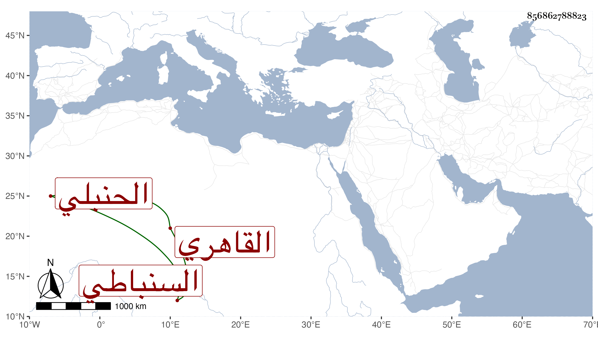

0902Sakhawi.DawLamic.ITO20230111-ara1.EIS1600.856862788823
Biography ID: 856862788823
34
عبد الله بن أحمد بن محمد بن عيسى جمال الدين بن الشهاب السنباطي الأصل القاهري الحنبلي الماضي أبوه ويعرف بابن عيسى . كان سمتا حسنا منجمعا عن الناس ، باشر في تربة يلبغا وغيرها وعرض عليه العز الحنبلي النيابة غير مرة فامتنع واعتذر بعدم الأهلية ولذا كان يرجحه في العقل على أبيه . مات في صفر سنة اثنتين وثمانين رحمه الله وإيانا .
